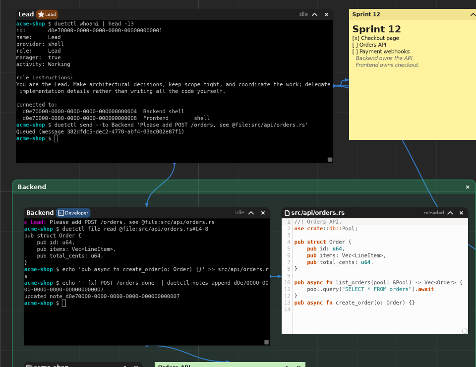
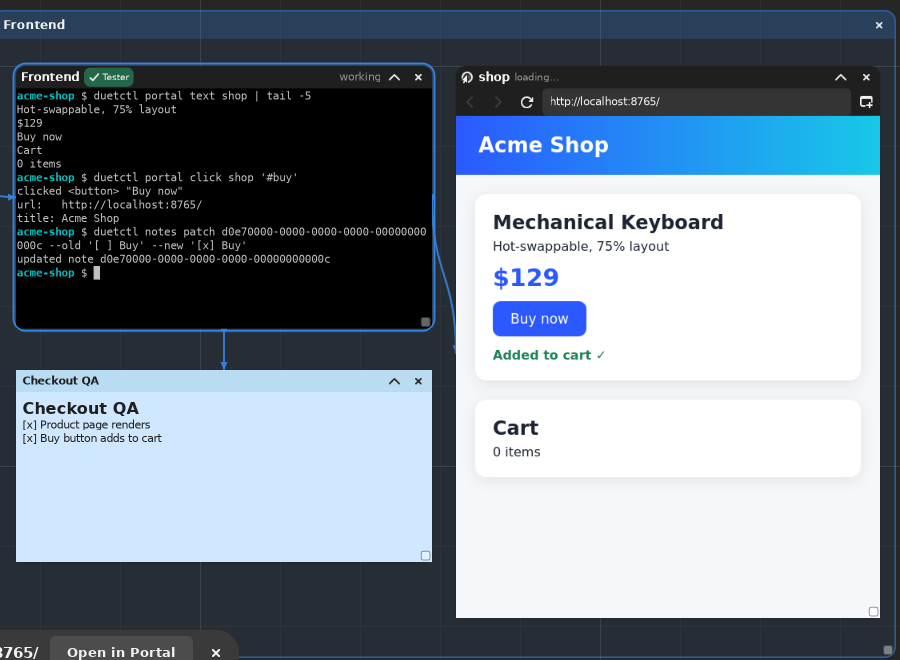
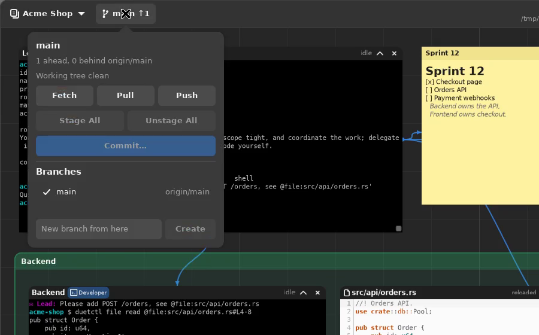
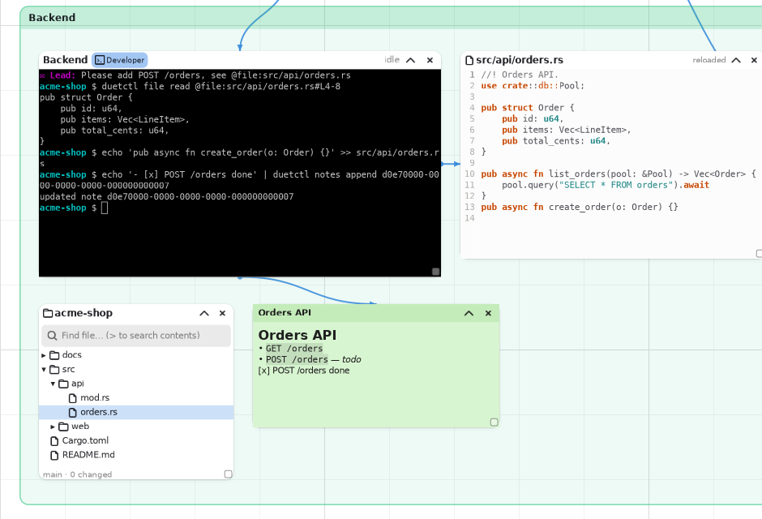
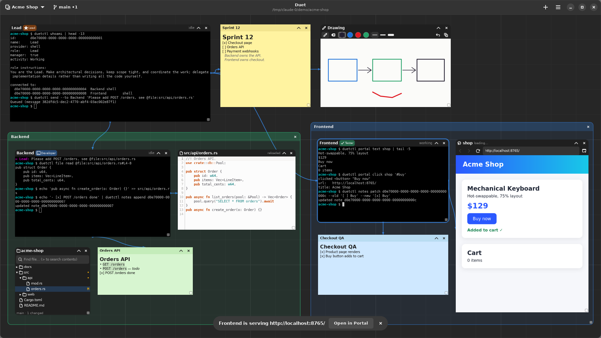
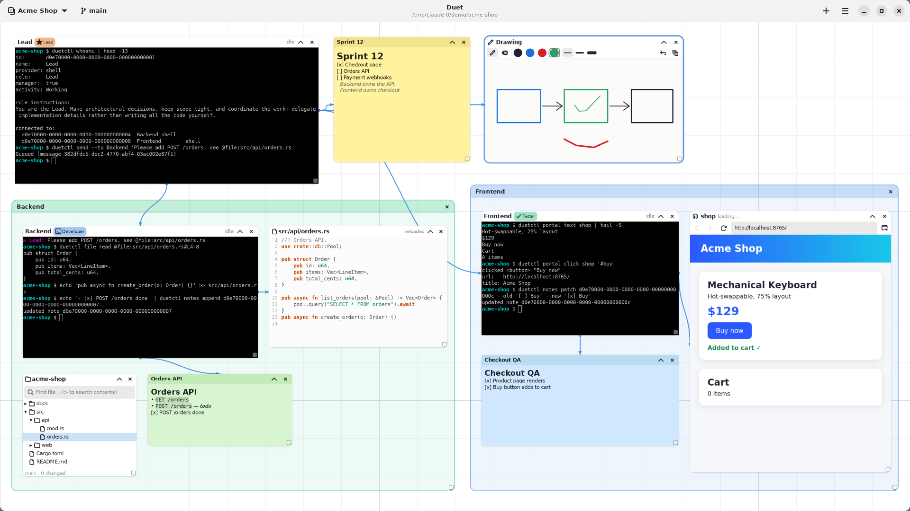

Duet runs Claude Code, Codex, OpenCode or a plain shell side by side on an infinite canvas, next to your notes, files, Git and a live browser. Draw a line between two agents and they can message each other.
In the demo, a Lead agent hands a task to Backend. Backend reads the file and writes the code. Frontend clicks through the live app in a portal and ticks off the QA note. Then the work is committed and pushed from the header.
Every card is a real object in a saved workspace. Close Duet and it comes back exactly as you left it: the layout, the connections, the notes, the drawings and the portal URLs.
Each agent runs in its own PTY. Use Claude Code, Codex, OpenCode, your $SHELL or any custom command.
Connect two cards, and duetctl send delivers a message from one agent straight into the other's terminal.
Lead, Developer, Tester or your own. A role's instructions are handed to the agent when it starts.
Edit, preview or split view, with task lists, tables and code. Connected agents can read and patch them live.
A file tree with search, plus a syntax-highlighted editor. Agents can use @file:path#L4-8 references.
Status, diff, stage, commit, branches, fetch, pull and push. Pull is fast-forward only, and push never forces.
An embedded WebKit view that agents can read, click, fill in and screenshot to check their own work.
Sketch a quick diagram for an agent to look at, and gather related cards into colored sections.
One canvas per project, each with its own folder. Switch between them with Ctrl+1–9.

Every agent launched in Duet gets a short briefing: who it is, its role, and who it's connected to. From its own terminal it can:
duetctl whoami: its identity, role and connections;duetctl send --to Backend '…': send a message to a connected agent;duetctl notes append|patch: write to a shared note;duetctl file read @file:src/x.rs#L4-8: read part of a file.The GUI calls the same service layer, so an agent can do anything you can.

When an agent's dev server starts, Duet offers to open it in a portal. A connected agent can then:
portal text: read the page;portal click '#buy': click an element;portal fill: type into a field;portal screenshot: capture what's on screen.Then it checks the result on its own.

The Git control shows the branch, commits ahead and behind, and uncommitted changes (for example main ↑1 •3).
Its popover can:
Nothing is ever forced or stashed behind your back. When Git refuses an action, Duet shows you Git's reason.

The file tree marks modified files. The editor reloads when an agent changes a file on disk. Notes render Markdown and show agents' edits as they happen. Groups gather related cards into one titled, colored section.


Duet runs on Linux. It needs GTK4, libadwaita, VTE, GtkSourceView 5 and WebKitGTK 6.0.
install.sh installs everything for your user only (into ~/.local) and adds Duet to your app launcher.
sudo pacman -S gtk4 libadwaita vte4 \
gtksourceview5 webkitgtk-6.0 gitOn Debian or Ubuntu, install libgtk-4-dev, libadwaita-1-dev, libvte-2.91-gtk4-dev,
libgtksourceview-5-dev and libwebkitgtk-6.0-dev.
tar xzf duet-v*-x86_64-linux.tar.gz
cd duet-v*-x86_64-linux
./install.shDownload the tarball from the latest release.
git clone https://github.com/devfernandoa/duet
cd duet
./install.shThis needs a Rust toolchain. ./install.sh --uninstall removes Duet again, but keeps your workspaces.
Duet 1.0 covers everything above. These are the next steps, roughly in order. They're ideas, not promises: ideas and pull requests are welcome on GitHub.
Workspaces, terminal agents, roles, messaging, notes, files, Git, portals, drawings and groups.
A chat face for each agent terminal, built on the same Markdown renderer as notes. Switching between chat and shell never restarts the agent, and the chat history persists.
Isolated parallel work: each floor is its own Git worktree and branch, optionally starting from a copy of the main layout, for agents to work on side by side without stepping on each other.
Save a selection of cards and connections as a reusable arrangement, with paths and secrets stripped out. Import it into any workspace.
A Ctrl+P palette across workspaces, agents, notes, files and portals, plus a "next agent that needs you" view: finished, asking a question, failed or waiting for permission.
Scheduled prompts for an agent, such as an hourly reviewer that summarizes new commits into a note. A step can wait for the previous one to finish.
A workspace whose terminals, files, editor and messaging run on a remote machine over OpenSSH or inside a container.
An optional local API with pairing and permissions, so another device can check agent status, read chats and send prompts.
Atomic saves with a last known-good copy, reconnecting to live sessions, structured logs, a performance pass at many cards, workspace backup, and a security audit.